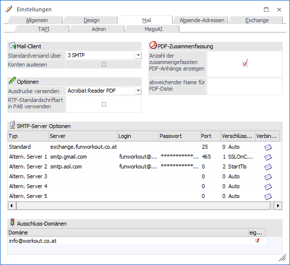
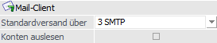
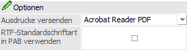
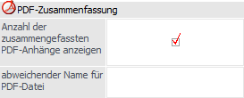
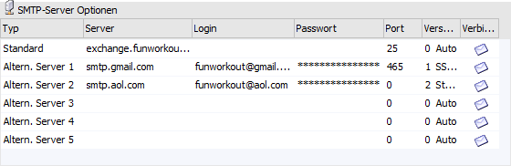
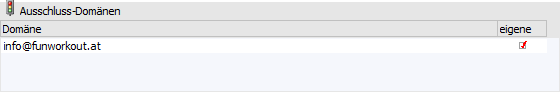

In dem Register "Mail" können grundsätzliche Optionen für den Versand von Dokumenten aus der WinLine heraus vorgenommen werden.

Mail-Client

Ø Standardversand über
An dieser Stelle kann gewählt werden, welcher Mail-Client für den Versand verwendet werden soll (standardmäßig wird "Outlook" verwendet).
ü 1 - MAPI
Ist nicht Microsoft
Outlook, sondern ein anderes Mailsystem installiert und soll dieses für den
Versand verwendet werden, so muss diese Option selektiert werden. Hierdurch wird
ein MAPI-Call durchgeführt, welcher das (als Standard-Mail-System installierte)
Mail-Programm öffnet.
ü 2 - Outlook
Es wird Microsoft
Outlook für den Versand verwendet.
ü 3 - SMTP
Der Versand soll
direkt über den SMTP-Server (SMTP steht für "Simple Mail Transfer Protocol")
erfolgen.
Hinweis
Bei Auswahl dieser Option können
in der Tabelle "SMPT-Server Optionen" die erforderlichen Daten erfasst werden.
Zusätzlich muss der WinLine Server gestartet sein, damit die SMTP-Mails
standardmäßig jede 30 Sekunden automatisch versendet werden. Der Intervall in
Sekunden kann im Register WinLine
Server mittels Option "Mailversand im Hintergrund ausführen" innerhalb der
WinLine mobile angepasst werden.
Die Option "Mailversand im Hintergrund
ausführen" innerhalb der CWL im Register Admin ist standardmäßig deaktiviert
(0) und darf nur bei Einzelplatzinstallationen aktiviert (>0) werden.
Für
den SMTP-Versand wird die Datei "MesoSendMail.exe" aus dem WinLine
Serververzeichnis im Unterordner "MesoSendMail" angesprochen.
Ø Konten auslesen
Bei nicht Aktivierung dieser Checkbox wird die Absender-Adresse nicht berücksichtigt, d.h. es wird beim Versand über Outlook die E-Mail immer mit dem Standard-Absenderkonto (lt. Microsoft Outlook) versendet.
Ist diese Checkbox hingegen aktiviert, so wird die Absender-Adresse berücksichtigt und das Mail kann mit den von Microsoft Outlook zur Verfügung stehenden E-Mail-Adressen (Mail-Konten) versendet werden.
Optionen

Ø Ausdrucke versenden
Hier kann entschieden werden, in welchem Format die Ausdrucke aus der WinLine versendet werden sollen, wobei standardmäßig das mesonic-Spoolformat (*.SPL) verwendet wird. Folgende Optionen stehen hierfür zur Verfügung:
ü Mesonic SPL-Datei
Die Datei
wird wie gewohnt als MESONIC-Spool-Datei verschickt, wobei auch bei mehreren
Seiten Ausdruck nur eine Datei verschickt wird.
ü MHT-Datei (HTML
Archiv)
MHT-Format ist ein mehrseitiges HTM-Format und kann nur mit dem
Internet-Explorer ab Version 5.0 geöffnet werden. Auch hier wird bei einem
mehrseitigen Dokument nur eine Datei verschickt.
ü einzelne HTM-Datei
Dieses
Format kann jeder Internet-Browser öffnen. Bei einem mehrseitigen Dokument wird
allerdings für jede Seite eine eigene Datei verschickt.
ü 1. Seite als HTML Mail
Bei
dieser Einstellung wird die erste Seite des Ausdrucks direkt als Text in das
Mail gestellt. Bei mehreren Seiten werden alle Seiten wieder als eigene
Dokumente (jede Seite eine Datei) angehängt.
ü SPL-Datei Version 2.0
Die Datei
wird im "alten" WinLine Spool-Format ausgegeben und kann somit von älteren
Spoolviewer (bis Version 7.0) gelesen werden.
ü Acrobat Reader PDF
Der Ausdruck
wird als PDF-Datei konvertiert und versendet. Dabei wird der von MESONIC
mitgelieferte PDF-Treiber verwendet. Die Datei kann nur von einem Acrobat Reader
gelesen werden.
ü Datei im MS Word RTF-Format
Der
Ausdruck wird als MS Word RTF-Datei versendet und kann von MS Word gelesen
werden.
ü Datei im Richtext Format
Der
Ausdruck wird als RTF-Datei versendet und kann von jedem RTF-fähigem Programm
gelesen werden.
ü Tabulatorgetrennte
Textdatei
Der Ausdruck wird als Textdatei ausgegeben, die mit Tabulatoren
getrennt ist. Diese Datei kann in jedes Textverarbeitungsprogramm eingelesen
werden.
ü Reine Textdatei
Der Ausdruck
wird in eine Textdatei ausgegeben.
Ø RTF-Standardschriftart in PAB verwenden
Durch Aktivierung dieser Option wird die RTF Standardschriftart (siehe Register Allgemein) auch im Postausgangsbuch für den Mailtext verwendet.
PDF-Zusammenfassung

Mit den folgenden Einstellungen kann die Bezeichnung des PDF-Anhangs für den Mailversand variiert werden. Dieses kommt immer dann zum Tragen, wenn PDF-Anhänge erzeugt und zusammengefasst werden sollen.
ü Fenster "Despoolen"
Es wird die
Option "Dokumente bei Mail zusammenfassen" aktiviert und zumindest zwei
Dokumente für den Mailversand ausgewählt. Zusätzlich wurde die Auswahl
"Ausdrucke versenden" auf "Acrobat Reader PDF" gestellt.
ü Steuerelemente "AUX MAIL"
Es
wird im Steuerelement die Option "PDF-Anhänge zusammenfassen" ausgewählt und
zumindest zwei PDF-Dokumente (inklusive Druck, d.h. im Feld "Zusätzliche
Anhänge" müssen auch PDFs enthalten sind) versendet.
Ø Anzahl der zusammengefassten PDF-Anhänge anzeigen
Durch Aktivierung dieser Option wird die Anzahl der zusammengefassten PDF-Dateien in Klammern nach dem Dateinamen ausgegeben. Ansonsten wird ein "+" angefügt, außer es wurde ein abweichender Dateiname hinterlegt (siehe "Beispiel 4").
Ø abweichender Name für PDF-Datei
An dieser Stelle kann ein individueller Name für die zusammengefasste PDF-Datei vorgegeben werden.
Hinweis
Wird im Namen keine Dateiendung angegeben, so wird automatisch ".pdf" angehängt. Wird hingegen eine Endung vergeben (oder auch nur ein "."), dann bleiben diese Eingaben dennoch erhalten - werden jedoch an den Dateinamen angehängt und dienen somit nicht als Endung.
Beispiel 1
ü Option "Anzahl der zusammengefassten PDF-Anhänge anzeigen" ist deaktiviert
ü es wurde kein eigener Name für den Anhang vergeben worden
Die PDF-Anhänge werden im "Führungs-PDF-Dokument" zusammengefasst. D.h. der Name des Anhangs ist der Dokumentenname dieses führenden PDF-Dokumentes und an den Namen wird ein "+" angefügt. Somit kann erkannt werden, dass in dem Dokument mehrere PDFs zusammengefasst sind.
Ergebnis
Es wird eine Rechnung ausgedruckt, die mehrere PDF-Dokumente als Attachments definiert hat. Somit heißt z. B. das gemailte PDF-Dokument "Rechnung+.pdf".
Beispiel 2
ü Option "Anzahl der zusammengefassten PDF-Anhänge anzeigen" ist aktiviert
ü es wurde kein eigener Name für den Anhang vergeben worden
Statt dem o. a. "+" wird die tatsächliche Anzahl der (drei) Anhänge in Klammern zum Namen hinzugefügt.
Ergebnis
Die erzeugte Rechnung (mit drei PDF-Dokumenten im Anhang) heißt "Rechnung(3).pdf".
Beispiel 3
ü Option "Anzahl der zusammengefassten PDF-Anhänge anzeigen" ist aktiviert
ü es wurde ein eigener Name für den Anhang vergeben
Der Anhang heißt wie in dem Eingabefeld angegeben (z.B. "Anhang"). Zusätzlich wird die Anzahl der (drei) PDF-Dokumente in Klammer angegeben.
Ergebnis
Das erzeugte Dokument heißt "Anhang(3).pdf"
Beispiel 4
ü Option "Anzahl der zusammengefassten PDF-Anhänge anzeigen" ist deaktiviert
ü es wurde ein eigener Name für den Anhang vergeben
Der Anhang (z.B. "Anhang") heißt wie angegeben und es wird vom Programm keine Anzahl (der drei verfügbaren Dokumente) und auch kein "+" im Namen angefügt.
Ergebnis
Das erzeugte PDF-Dokument heißt einfach nur "Anhang.pdf".
SMTP-Server Optionen

Sollen die Mails über einen SMTP-Server verschickt werden, dann können an dieser Stelle die erforderlichen Eingaben getätigt werden, wobei bis zu 7 Server (Standard + 6 alternative Server) deklariert werden können.
Ø Typ
In dieser Spalte wird der Typ des Severs (Standard oder Alternativ) angezeigt.
Ø Server
Hier wird der Server eingegeben, über welchen die E-Mails verschickt werden sollen. Es kann der Name (z.B. mailserver.domäne.com) oder die IP-Adresse angegeben werden.
Ø Login
Hier muss der Loginname eingetragen werden, mit dem man sich auf den SMTP-Server verbinden möchte (bzw. darf). Diese Informationen decken sich ggf. auch mit den Einstellungen für die Internetverbindung.
Ø Passwort
An dieser Stelle wird des Passworts zum Login hinterlegt. Das Passwort wird dabei mit *** angezeigt und ist somit nicht für nebenstehende Personen bei der Betrachtung des Bildschirmes ersichtlich.
Hinweis
Damit E-Mails via SMTP verschickt werden können, muss bei dem WinLine Benutzer die Absender-Adresse (E-Mail-Adresse des Absenders) hinterlegt werden. Details hierzu entnehmen Sie bitte dem WinLine ADMIN Handbuch, Kapitel "Benutzeranlage" und dem Kapitel Einstellungen - Register "Abs-Adressen".
Hinweis 2
Damit die Tabelle der "SMTP-Server-Optionen" bearbeitet werden kann muss der aktuelle Benutzer entweder ein Datenadministrator oder Voll-Administrator sein. Andernfalls kann in der Tabelle nichts bearbeitet/abgeändert werden.
Ø Port
Hier kann der Port angegeben werden, über welchen der SMTP-Server kommuniziert.
Ø Verschlüsselung
An dieser Stelle kann die Art der Verschlüsselung für den E-Mail-Versand definiert werden, wobei folgende Varianten zur Verfügung stehen:
ü 0 - Auto
Es wird automatisch
versucht die Verschlüsselung anhand des Servers bzw. des Ports auszulesen.
ü 1 - SSLOnConnect
Wenn die
Option "1 - SSLOn Connect" aktiviert ist, dann werden die Mails verschlüsselt
übermittelt. Voraussetzung hierfür ist, dass der SMTP-Server die
SSL-Verschlüsselung entsprechend unterstützt.
ü 2 - StartTls
Auch bei der
Verwendung der Option "2 - StartTls" werden die Mails verschlüsselt
übermittelt.
ü 3 -
StartTlsWhenAvailable
Hierbei erfolgt ebenso eine Verschlüsselung,
jedoch nur dann, wenn der Server diese Art der StartTls-Erweiterung unterstützt.
ü 4 – <KEINE>
Es findet
keine Verschlüsselung statt
Ø Verbindungscheck
Dieser Button steht für eine Überprüfung der getätigten Einstellungen zur Verfügung.
Ausschluss-Domänen

In der Tabelle "Ausschluss-Domänen" können folgende Daten erfasst werden:
Ø Domäne
Wenn ein Email mit dem "WinLine Archiv-Import"-Button als Archiv-Eintrag an WinLine übergeben wird, dann erfolgt automatisch im Kontenstamm eine Suche nach der Email-Adresse. Wenn ein entsprechender Eintrag gefunden wird, dann wird dieser automatisch als Kontonummer in die Beschlagwortung übernommen.
In diesem Bereich können die Domänen hinterlegt werden, für die keine Suche im Kontenstamm durchgeführt werden soll.
Beispiel
In der Tabelle ist der Eintrag "funworkout.at" vorhanden. Wird nun ein Mail archiviert, welche als Absender z.B. "meyer@funworkout.at" aufweist, dann wird für diesen Absender nicht in den Stammdaten nach einer Kontonummer gesucht.
Ø eigene
Zusätzlich zur Domäne, welche nicht geprüft werden soll, kann auch die Option "eigene" gesetzt werden. Damit wird definiert, welches die Domäne bzw. Email-Adresse ist.
Anhand dieser Einstellung lässt sich in weiterer Folge dann ermitteln, ob es sich bei dem Mail um ein eingehendes oder ein ausgehendes Mail handelt (wenn die eigene Domäne im Empfänger steht, dann handelt es sich um ein eingehendes Mail, wenn die eigene Domäne im Absender vorkommt, dann handelt es sich um ein ausgehendes Mail).
Hinweis
Wenn in einer Email sowohl Empfänger als auch Absender die eigene Domäne beinhalten, dann wird die Mail als ausgehend behandelt.
Tabellenbuttons

Ø Ausgabe Excel
Durch Anwahl des Buttons "Ausgabe Excel" wird der Inhalt der Tabelle an Microsoft Excel übergeben.
Ø Tabelleneinstellungen speichern
Die Spalten einer Tabelle können grundsätzlich an beliebige Positionen verschoben, bzw. in der Breite entsprechend angepasst werden. Durch Anwahl des Buttons "Tabelleneinstellungen speichern" werden die Einstellungen benutzerspezifisch gespeichert und bei dem nächsten Aufruf des Programmpunktes wieder vorgeschlagen.
Ø Gesamteinstellungen speichern
Im Gegensatz zu "Tabelleneinstellungen speichern" können mit "Gesamteinstellungen speichern" mehrere Tabellenaufbauten gespeichert und nach Wunsch geladen werden. Zusätzlich werden Sonderfunktionen der Tabelle (z.B. "Spalte gruppieren") ebenfalls bei der Speicherung bedacht.